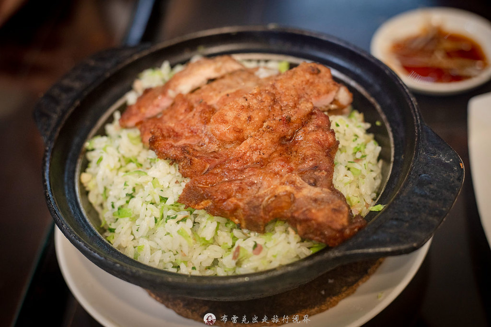

布雷克｜一品巧廚：天母德行東路江浙菜，排骨菜飯與砂鍋獅子頭

一句話摘要
《一品巧廚》是天母德行東路上一間外觀低調、像家庭餐館的江浙料理小館，重點收藏菜色是排骨菜飯與砂鍋獅子頭，適合放進天母／芝山站美食口袋名單。
為什麼保存
這篇屬於實用生活／美食資訊，符合欒帥知識庫的「美食雷達」保存邏輯。原文提供明確店名、地址、交通、電話、營業時間與推薦菜色，未來在天母、芝山站或德行東路附近找中式合菜、家庭聚餐、江浙料理時，可以快速查到。
店家資訊
- 店名：一品巧廚
- 地址：台北市士林區德行東路8號
- 交通：捷運芝山站步行約 8 分鐘，鄰近天母 SOGO
- 電話：(02) 2833-1497
- 營業時間：11:00–14:00、17:00–20:30
- 公休日：週三
- 類型：江浙料理、上海菜飯、家庭餐館、中式合菜
原文重點整理
- 《一品巧廚》門面與裝潢都很樸實，容易路過錯過；氛圍像古早味家庭小館。
- 菜單橫跨點心、麵食、炒飯、湯品、海鮮、肉類熱炒與砂鍋類。
- 價位以台北天母生活圈來說偏親民：麵食／點心多落在百元上下，熱炒約兩三百元。
- 原文評價最高的兩道是「排骨菜飯」與「砂鍋獅子頭」。
口袋菜單
| 菜色 | 原文價格 | 備註 |
|---|---:|---|
| 排骨菜飯 | NT$230 | 菜飯乾爽不油，排骨有酒香、外層微酥、內裡軟嫩，是主打收藏品項。 |
| 砂鍋獅子頭 | NT$300 | 湯頭甘醇，獅子頭軟嫩，內有白菜與芋頭；原文評價很高。 |
| 豆干肉絲 | NT$200 | 鹹香下飯，適合配白飯。 |
| 牛肉捲餅 | NT$100 | 餅皮酥脆，牛肉與蔥段比例不錯。 |
| 雪菜百頁 | NT$190 | 清爽但越吃越有味，適合作為下飯菜。 |
| 絲瓜小包 8 粒 | NT$170 | 絲瓜水分多、清甜，但原文覺得皮略厚。 |
| 一品燒雞 | NT$210 | 類似山東燒雞，原文評為可點可不點。 |
| 棗泥小包 | NT$220 | 小顆棗泥包，甜度不膩，適合飯後甜點。 |
適合情境
- 在天母 SOGO、芝山站、德行東路附近想找中式正餐。
- 想吃江浙菜、上海菜飯、砂鍋類或家庭式合菜。
- 朋友或家人聚餐，不想吃太華麗但想吃穩定小館。
- 收進「天母／士林低調美食」清單，之後可搭配 Google Maps 補地圖。
實用提醒
餐廳營業時間與公休日可能調整，前往前建議再用電話或 Google Maps 確認。若是假日或多人用餐，原文也建議可先電話訂位。